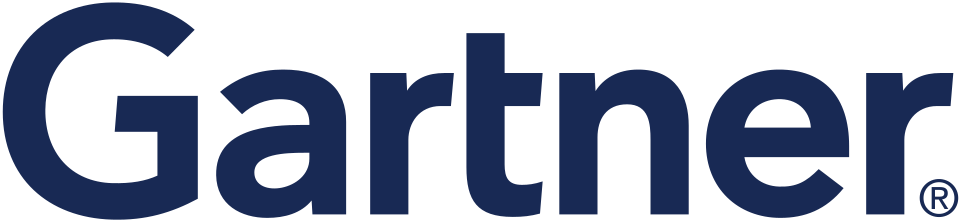

가트너 Gartner
가트너(Gartner)는 미국의 정보 기술 연구 및 자문 회사이다. 정부기관과 IT 기업, 투자 회사 등을 대상으로 시장 보고서와 자문 서비스를 제공한다.
최종 업데이트

가트너는 어떤 브랜드인가
이 회사는 정보 기술 시장을 연구하고 분석 결과와 자문 서비스를 고객에게 제공한다. 고객은 정부기관, IT 기업, 투자 회사 등으로 구성하며 연 단위 계약을 통해 보고서와 자문 서비스를 판매한다.
상품은 일선 IT 조직이 활용하는 End-User 제품과 시장 전망을 제공하는 High Tech 제품으로 구분한다. 시장 분석 결과를 시각화하는 도구로 하이프 사이클과 매직 쿼드런트를 개발해 사용한다.
IT/Xpo Symposium과 주제별 콘퍼런스를 매년 개최하며 미국 올랜도 연례행사에서는 10대 전략기술을 발표한다.
가트너는 어떻게 시작되고 성장했나
1979년 Gideon Gartner가 가트너 그룹이라는 이름으로 회사를 설립했다. 비공개 기업으로 출발한 뒤 1980년대에 공개 기업으로 전환했으며, 전환 직후 런던의 광고 회사 Saatchi & Saatchi가 인수했다.
1990년대에는 Bain Capital과 Dun & Bradstreet의 투자 아래 해당 투자사 경영진 일부가 회사를 다시 인수했다. 2001년에는 사명을 가트너로 변경했다.
성장 과정에서 Real Decisions, Gartner Dataquest, NewScience, Meta Group, AMR Research, Burton Group을 인수했으며 2017년에는 CEB를 인수·합병했다.
가트너의 브랜드 아이덴티티는 무엇인가
하이프 사이클과 매직 쿼드런트로 정보 기술 시장 분석을 시각화하고, 보고서와 자문 서비스를 연 단위 계약으로 제공하는 점이 특징이다.
가트너의 대표 제품과 서비스는 무엇인가
가트너는 연 단위 계약을 통해 정보 기술 관련 보고서와 자문 서비스를 판매한다. 제품은 일선 IT 조직을 위한 End-User 제품과 시장 전망을 다루는 High Tech 제품으로 구분한다.
시장 분석 결과의 시각화 도구로 하이프 사이클과 매직 쿼드런트를 개발해 활용한다. 매년 IT/Xpo Symposium과 주제별 콘퍼런스를 개최하며, 미국 올랜도에서 여는 연례행사에서는 10대 전략기술을 발표한다.
고객이 제공한 정보는 차기 보고서와 향후 미래 예측을 위한 자료로 활용한다.
가트너는 지금 어떤 상태인가
본사는 미국 코네티컷주 스탬퍼드에 위치하며 Gene Hall이 최고경영자를 맡는다. 회사는 5,700여 명의 종업원을 두며 이 가운데 1,435명이 리서치 애널리스트와 컨설턴트 인력에 해당한다.
세계 85개국에 12,400여 개의 고객을 두고 정부기관, IT 기업, 투자 회사 등을 대상으로 사업을 전개한다.
가트너 로고는 어떻게 변해왔나
자주 묻는 질문
가트너는 어느 나라 브랜드인가요?
가트너는 미국의 기술·전자 브랜드입니다.
가트너는 언제 설립되었나요?
가트너는 1979년 설립되었습니다.
가트너의 브랜드 아이덴티티는 무엇인가요?
하이프 사이클과 매직 쿼드런트로 정보 기술 시장 분석을 시각화하고, 보고서와 자문 서비스를 연 단위 계약으로 제공하는 점이 특징이다.
가트너의 대표 제품은 무엇인가요?
가트너는 연 단위 계약을 통해 정보 기술 관련 보고서와 자문 서비스를 판매한다.
가트너의 본사는 어디에 있나요?
본사는 미국 코네티컷주 스탬퍼드에 위치하며 Gene Hall이 최고경영자를 맡는다.
가트너의 창업자는 누구인가요?
가트너의 창업자는 Gideon Gartner입니다(위키데이터 기준).
가트너의 공식 웹사이트는 어디인가요?
가트너의 공식 웹사이트는 https://www.gartner.com/ 입니다.
출처와 검증
가트너 관련 참고: 공식 웹사이트 · 위키데이터 Q174198 · 한국어 위키백과 · 영어 위키백과. 브랜드명은 한글과 원어를 함께 표기하되 데이터에 없는 표기는 만들지 않습니다. 기원 국가·설립연도는 검수된 정의문에서 확인된 값을 우선하고, 없을 때만 공식 웹사이트 URL이 일치하는 위키데이터 개체의 값을 씁니다. 위키데이터 값은 2026-09-12 기준입니다.